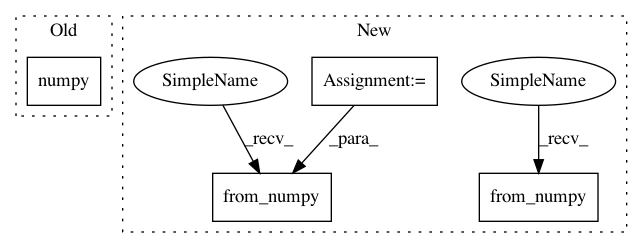

1f3da600c20e3376b0bb396bba482b1e90b7883c,i3nception_tf.py,,,#,34
Before Change
// batch_params = i3nception.get_bn_params(sess, batchnorm_name)
// Compare outputs
compare_outputs(tf_out3dsample, out3d.data.numpy())
import pdb
pdb.set_trace()
After Change
// init = tf.global_variables_initializer()
// sess.run(init)
for i, (input_2d, target) in enumerate(loader):
input_2d = torch.from_numpy(input_2d.numpy())
target = target.cuda()
target_var = torch.autograd.Variable(target)
// Pytorch forward pass
input_3d = input_2d.clone().unsqueeze(2).repeat(1, 1, frame_nb, 1, 1)
input_3d_var = torch.autograd.Variable(input_3d)
feed_dict = {}
input_3d_tf = input_3d.numpy().transpose(0, 2, 3, 4, 1) //
feed_dict[rgb_input] = input_3d_tf
// Get output
tf_out3dsample = sess.run(rgb_logits, feed_dict=feed_dict)
out_tf_np = tf_out3dsample.transpose((0, 4, 1, 2, 3))
out_tf = torch.from_numpy(out_tf_np)
unit_name_tf = "RGB/inception_i3d/Conv3d_1a_7x7/"
// Create state_dict
In pattern: SUPERPATTERN
Frequency: 3
Non-data size: 4
Instances
Project Name: hassony2/kinetics_i3d_pytorch
Commit Name: 1f3da600c20e3376b0bb396bba482b1e90b7883c
Time: 2017-11-24
Author: yana.hasson@inria.fr
File Name: i3nception_tf.py
Class Name:
Method Name:
Project Name: utkuozbulak/pytorch-cnn-visualizations
Commit Name: 3df2eaf74d8f2299ca05e3e98cab5bf89dafc249
Time: 2017-10-24
Author: utku.ozbulak@gmail.com
File Name: cnn_visualisation.py
Class Name:
Method Name:
Project Name: pytorch/tutorials
Commit Name: f1583258761ebc97d3f3cc1cbc381e0dc2f3d254
Time: 2018-07-01
Author: adam.dziedzi@gmail.com
File Name: advanced_source/numpy_extensions_tutorial.py
Class Name: ScipyConv2dFunction
Method Name: backward
Project Name: hassony2/kinetics_i3d_pytorch
Commit Name: 1f3da600c20e3376b0bb396bba482b1e90b7883c
Time: 2017-11-24
Author: yana.hasson@inria.fr
File Name: i3nception_tf.py
Class Name:
Method Name: